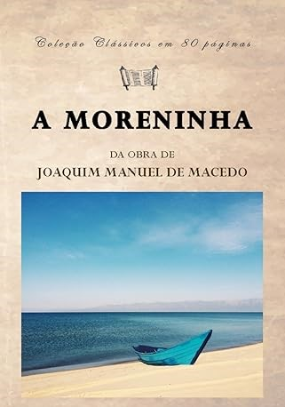

A Moreninha
A Moreninha", de Joaquim Manuel de Macedo, é um romance romântico brasileiro que narra a história de um grupo de estudantes de medicina que passam o feriado de Sant'Ana na Ilha de Paquetá, no Rio de Janeiro. O protagonista, Augusto, faz uma aposta com seus amigos: se ele se apaixonar e permanecer apaixonado por mais de quinze dias, escreverá um romance sobre a experiência. Durante a estadia, Augusto se encanta por Carolina, conhecida como a Moreninha, mas enfrenta o desafio de uma promessa de fidelidade feita na infância a uma desconhecida.
Adicionar à sacola